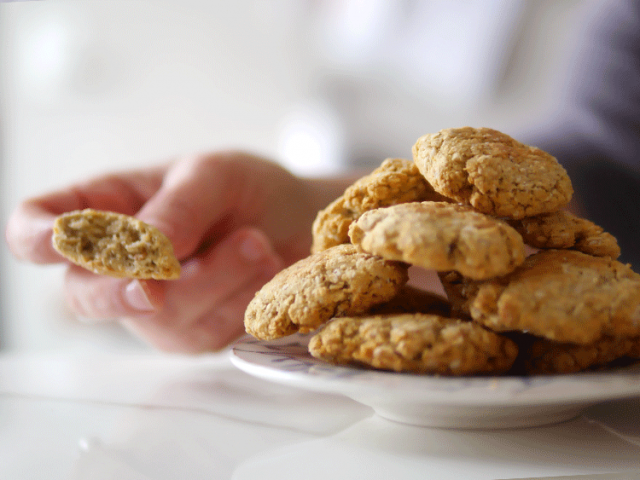

Galletitas de limón y avena

Ingredientes
- 30 gr de coco rallado
- 70gr de avena
- 2 sobrecitos de endulzado
- esencia de vainilla
- 1/2 cdita de polvo de hornear
- ralladura de 1 limón
- pizca de sal
- 1 huevo
Preparacion
- En un bol, colocar el coco rallado y la avena. Agregar el endulzante, puede poner un poco más si las quieren más dulces, pero con 2 sobrecitos de Zucra salen muy bien!
- Rallar la cáscara de medio limón y agregar la esencia de vainilla. Sumamos una pizca de sal para que realce el sabor.
- Agregar un huevo e integrar con un tenedor hasta que no se pueda más, y terminar de integrar todo con la mano. Dejar reposar unos 15 minutos, sobre todo para que se hidrate el coco y la avena.
- Armar bolitas pequeñas y aplastarlas. La idea es que sean rústicas, son ideales para hacer con los chicos! Mandar en una placa al horno a 180° hasta que estén levemente doradas.